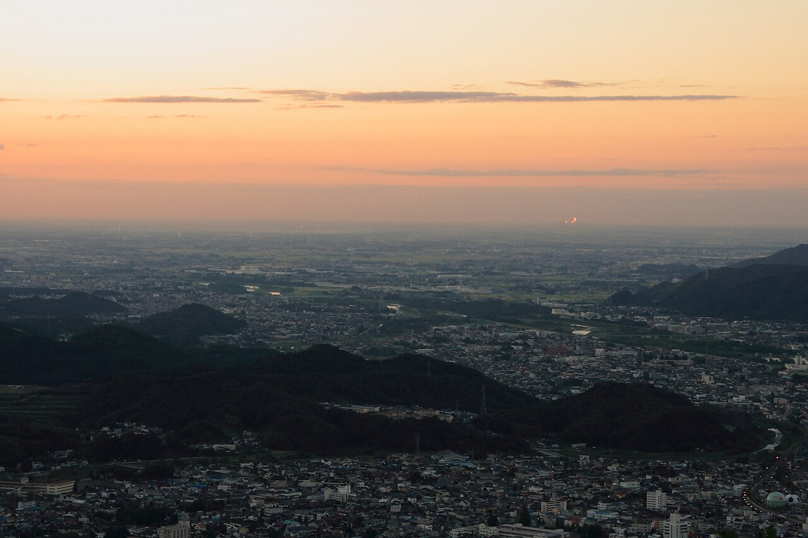

お店について
このページの言葉は制作側の案です。お店の公式な紹介ではありません。
| 屋号 | ぱんや赤石 |
|---|---|
| 所在地 | 群馬県伊勢崎市柳原町24-6 |
| 電話 | 0270-77-0096 |
| https://www.instagram.com/pan_aka.2026 | |
| 営業時間 | 準備中(お問い合わせください) |
| 定休日 | 準備中(お問い合わせください) |
| 駐車場 | 準備中(お問い合わせください) |
| イートイン | 準備中(お問い合わせください) |

制作側の案
朝のかまどの色
このサイトでは、焼き上がりの色、窯の熱、生地のクリーム色を手がかりに、黒・クリーム・えんじ色で全体を組み立てました。屋号の由来についてはこちらでは把握しておらず、色づかいはあくまで制作側のイメージです。お店の考え方や想いは、ぜひ直接お尋ねください。
スタッフ
準備中(お問い合わせください)
お問い合わせは、お電話またはInstagramから。